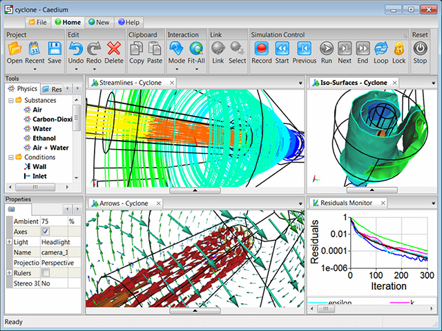

Caedium Product Downloads
Caedium v6.0.3 installers are available for the following platforms:
Caedium (without activated add-ons) is a viewer for sym and BRep files.
Caedium add-ons provide Computer-Aided Engineering tools that require activation - for details please review our FAQ "What is product activation?"
For more on the latest version see "Caedium Release Notes."
All versions of Caedium share the following system requirements:
- 300 MHz or higher, Intel or compatible processor (CPU)
- 128 MB RAM or better
- 300 MB free disk space
- SVGA 800x600 or better
- OpenGL
- Internet connection for online installation and activation
Specific platform requirements and installers are listed below.
Windows
Caedium on Windows
To see what to expect while installing under Windows please review our FAQ "What is the Windows installation process?"
Caedium requires administrator privileges to install.
Windows system requirements:
- 64-bit
- Windows 10.x
- 3Dconnexion Control Panel must be launched prior to launching Caedium to enable 3D mouse support in 3D views
- Script playback requires Python to be installed (recommend Python v3.3.x) and the preference Application->Python must refer to the full path to python.exe
Windows 64-bit installer:
Download Now (70 MB)
Unsupported legacy version:
Caedium v2.1.1 32-bit Download Now (29 MB)
Mac
 Caedium on the Mac
Caedium on the Mac
Additional installation steps:
Mac system requirements:
- OS X 10.15 (Catalina)
- Intel processor
Mac installer:
Download Now (99 MB)
Unsupported legacy versions:
- Caedium v6.0.0 for OS X 10.9 (Mavericks) Download Now (80 MB)
- Caedium v5.2.0 for OS X 10.6 (Snow Leopard), 10.7 (Lion), 10.8 (Mountain Lion) Download Now (80 MB)